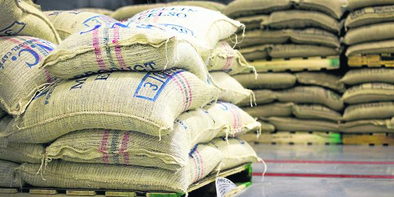

<ion-view title="Mejores prácticas" id="page4">
    <ion-content padding="true" class="has-header">
      <h1 id="mejoresPrCticas-heading1" style="color:#000000;">Noticias del sector cafetero</h1>
      <div id="mejoresPrCticas-markdown6" class="show-list-numbers-and-dots">
        <p style="color:#000000;">Este es un espacio destinado a la propagación de buenas prácticas en el cultivo, la cosecha, beneficio y comercialización del café.</p>
      </div>
      <div>
        </img>
      </div>

      <!--
      <div style="margin: 0px; line-height: 250px; background-color: rgb(232, 235, 239); text-align: center;">
        <i class="icon ion-image" style="font-size: 64px; color: rgb(136, 136, 136); vertical-align: middle;"></i>
      </div>
    

      <div ng-controller="MyController" align="center">
      <p>
          <button class = "button"  ng-click="openPopover($event)">Registrarse</button>
        </p>
      
      </div>
-->
      <div ng-controller="LoginController" align="center">
      
        <p>
          <button class = "button"  ng-click="openPopover($event)">Iniciar Sesion</button>
        </p>
      </div>
    </ion-content>
  </ion-view>

  